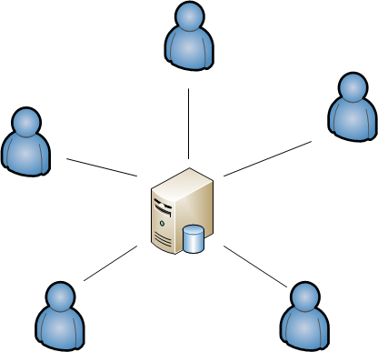

Database Build Process
for DBAs
SQL Databases Only
Centralized vs Sandbox
Database Development
Centralized
Sandbox

Sandbox database MAY NOT have a copy of all the data!
Process Components
- Source Control
- Database Sandbox
- Continuous Integration
- Automated Deployment
Source Control
Source Control
GIT
BitBucket
- Hosts Git on a Server
- Web Application
also called
Stash
underlies all the other components
Database Sandbox
Database Sandbox
Local Machine
SQL Express
Transition Scripts
Branch per feature
Demo
Making a Change
- Feature Branch
- Change Local DB
- Script Change in Transition Script
- Run Local Build (Validate Script)
- Commit Change to Source Control
Supports Linked Servers
Continuous Integration
Continuous Integration
for SQL Scripts
In software engineering, continuous integration (CI) is the practice of merging all developer working copies to a shared mainline several times a day.
-- wikipedia
Artifacts
All files needed to deploy or rebuild the system.
Pull Request
Request for code review to get my feature branch into a deployable branch.
Feedback / Approve / Needs Work
Artifacts => Ready to Deploy
Problem
"half baked" scripts
Automated Deployment
Automated Deployment
Only new transition scripts are applied.
Team City Deployment Example
Deployment Log
Only Method of Database Change Deployment
Even for ECMs
Database Version Tables

What changed?

?? Who clicks the deployment button ??
Rollback Scripts
Special Note
Rollback Scripts
Not Supported by Default
Recovery
- Automated Deployment => Transaction
- Database Backup
- Roll Forward
Must change Database Migration Utility
Database Migration Utilities
- Roundhouse
- DBDeploy
Roundhouse
- Does NOT Support Rollbacks
- Fully Featured
DB Deploy
- Support Rollbacks
- Old Technology
- Harder to Use
Automated Restore
Special Note